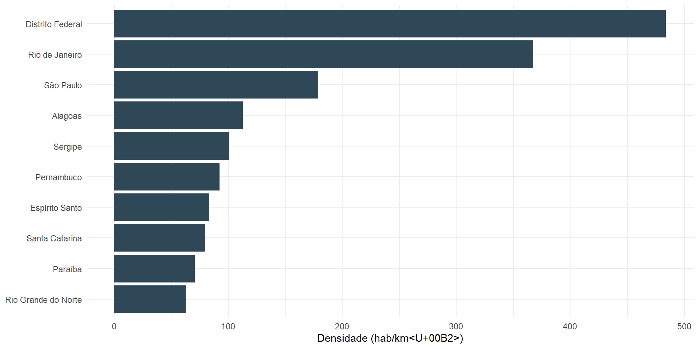

Relatórios reprodutíveis com R — Curso de Verão IME-USP 2026
leaflet;Use quando o público precisa:
Para uma mensagem única, um gráfico estático pode ser melhor — e funciona em PDF.

Figura 1
Mesma pergunta, dois formatos — a escolha depende de onde o relatório vai ser lido.
Widgets como plotly, leaflet, DT e reactable funcionam principalmente em HTML.
Aviso
Planeje uma alternativa estática para PDF, impressão e contextos de acessibilidade.
Duplicar documentos multiplica correções e inconsistências.
materiais/exemplos/relatorio-parametrizado.qmd filtra dados/populacao_uf.csv por região. Abra o arquivo — não é pseudocódigo, é um .qmd que renderiza de verdade.
O recorte deve estar explícito no título ou no texto do documento.
Teste uma combinação antes de automatizar todas.
Já existe pronto em materiais/exemplos/render-lote.R.
[1] "pequeno" "m\303\251dio" "grande" Entradas explícitas, saída previsível, nada depende de objeto global.
Cache economiza tempo, mas pode preservar resultados antigos.
Use somente quando compreender como e quando invalidá-lo.
relatorio-parametrizado.qmd com outra região;regiao ou ano no seu próprio relatório;R/.Escolha uma melhoria adequada:
Não é obrigatório usar todos os recursos.
Reutilização reduz duplicação e torna correções consistentes em todas as versões.
Versionamento, publicação e entrega.
Curso de Verão IME-USP 2026